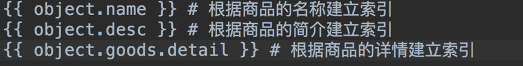

索引文件生成
1.在goods应用目录下新建一个search_indexes.py文件，在其中定义一个商品索引类。
from haystack import indexes from goods.models import GoodsSKU #指定对于某个类的某些数据建立索引 class GoodsSKUIndex(indexes.SearchIndex, indexes.Indexable): text = indexes.CharField(document=True, use_template=True) def get_model(self): return GoodsSKU def index_queryset(self, using=None): return self.get_model().objects.all()- 2.在templates下面新建目录search/indexes/goods。
- 3.在商品的目录下创建goodssku_text.txt。

- 4.在goodssku_text.txt中指定根据哪些字段建立索引。 
- 5.在终端执行如下命令生成索引文件。
python manage.py rebuild_index